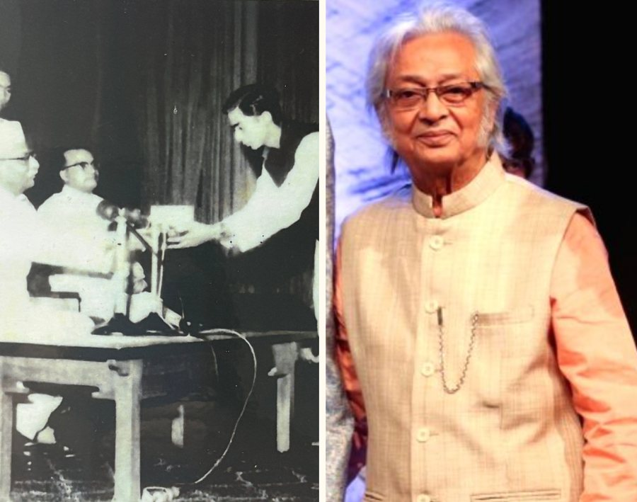
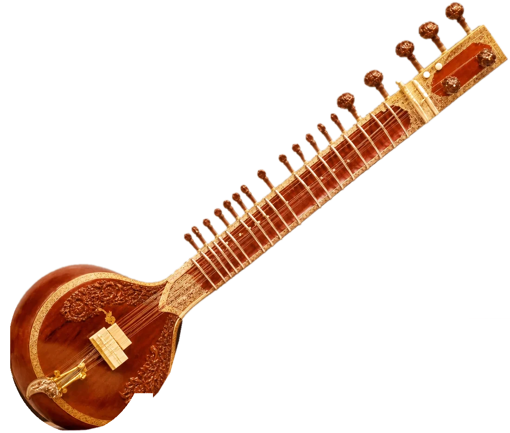
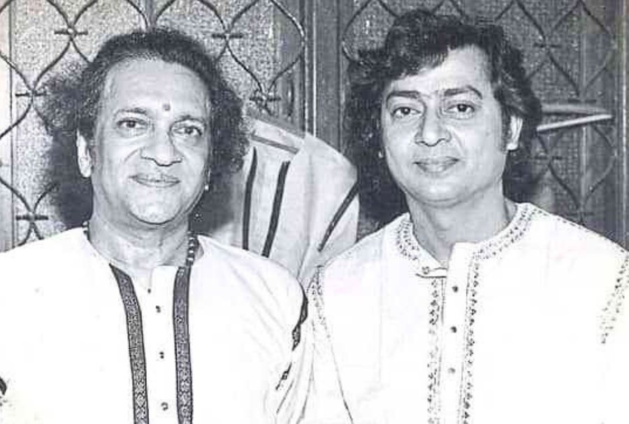
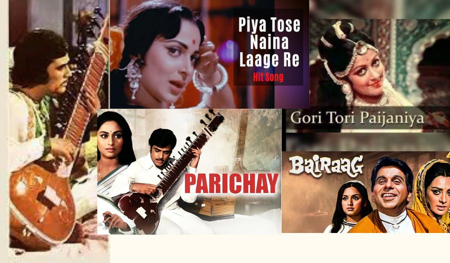
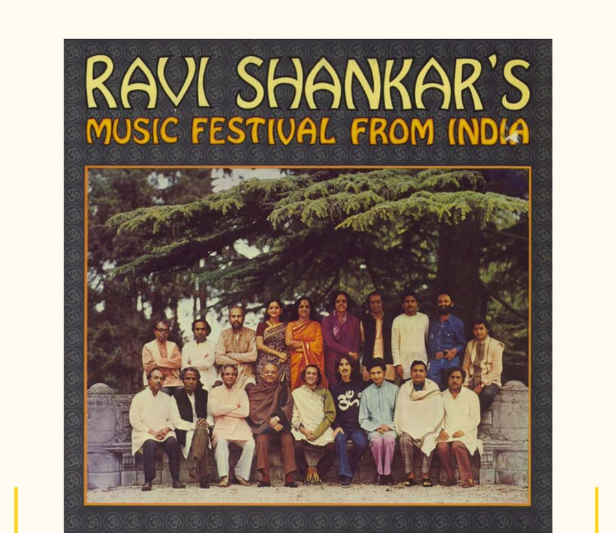
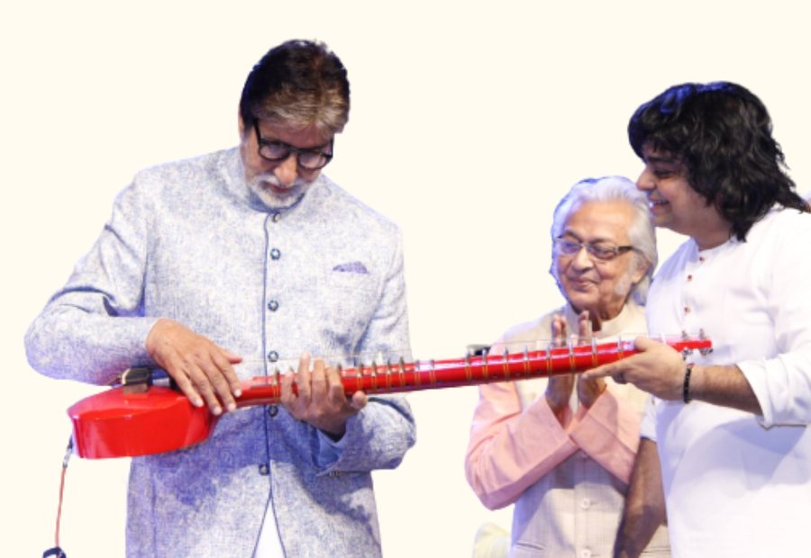
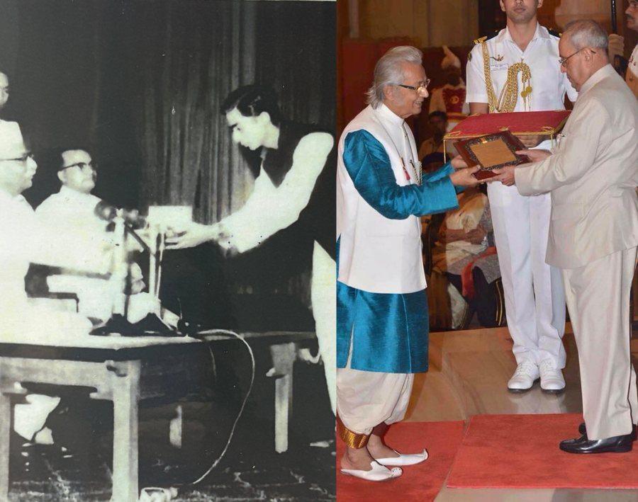

01
From Hawker to Maestro
Self-made and self-taught: from poverty to applause around the world.

Read story

Walk through the milestones, memories and music of Pandit Kartick Kumar.
Self-made and self-taught: from poverty to applause around the world.

Read storyDisplaced by Partition at 14, he sells on the streets and builds his own sitar.
1957: national winner at 21, honoured by President Dr. Rajendra Prasad.
Pandit Pannalal Ghosh hears his Ahir Bhairav and is astonished.
1958: “What do I teach you?” — “I’ll start from Sa Re Ga Ma.”

Read story1960: he becomes Kartick Kumar, the sitar of Hindi cinema’s golden songs.

Read storyThe Beatles & Ravi Shankar tour: 45 concerts across 36 cities.

Read storyRitu Samhar for 31 sitars, Om Ecstasy & Symphony, and 30 years teaching.
His son and disciple Niladri Kumar carries it forward, with the Zitar.

Read storyFrom the 1957 President’s award to the 2016 Sangeet Natak Akademi Award.

Read storyA fourth-generation sitarist, a senior-most disciple of Ravi Shankar, and the quiet architect of a thirty-one sitar concerto.
Born in Dhaka in 1936, Pandit Kartick Kumar carried the sitar from a family lineage into the concert halls of the world. His first teacher was his father, Mangal Chandra Das; his path later crossed that of Pandit Ravi Shankar, who took him under his wing in 1958.
For nearly four decades he also gave the sitar its voice in Hindi cinema — on countless Lata Mangeshkar songs and for the greatest composers of the age — while raising a son, Niladri Kumar, who would carry the gharana into a fifth generation.
Kartick Kumar